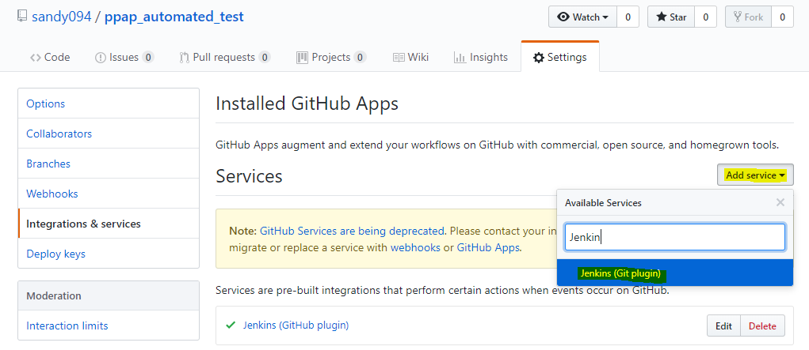
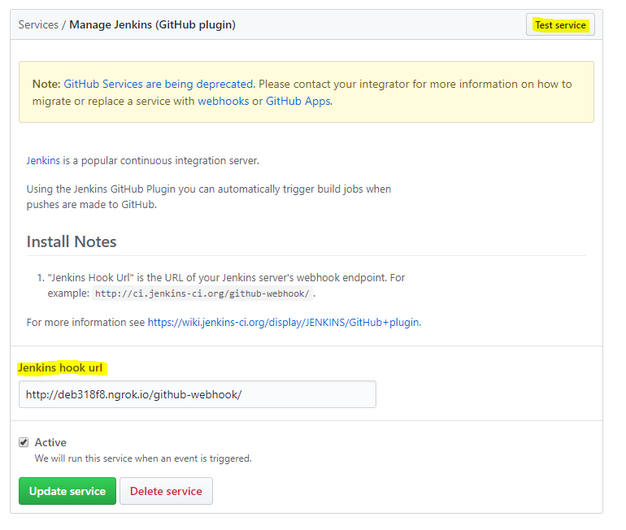
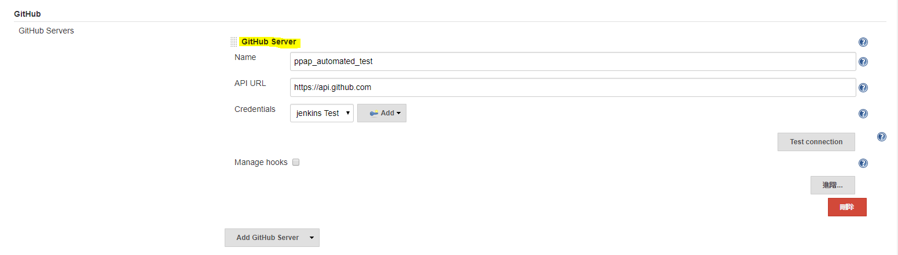
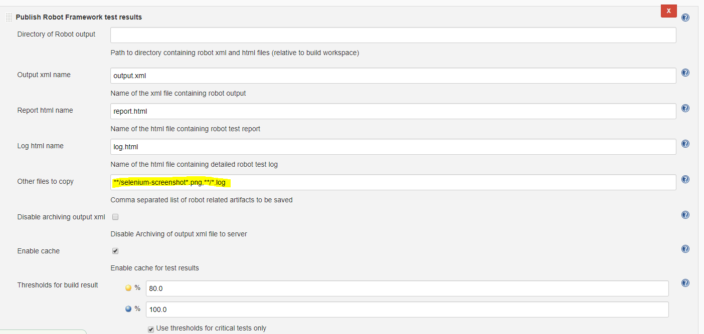

Jenkins
jenkins:一種CI 的工具
自動部屬 在被條件觸發時(定期定時.程式變動)，執行必要的編譯.測試.分析，達到自動化檢查專案狀態目的。
條件觸發就是 CI 中的 Continuous，不停地進行檢查和測試的行為，而取得程式碼後一連串的建置和測試，則是 CI 中集成的部分。
安裝流程(window)
1.從官網下載檔案
2.解壓縮安裝完成後-> install suggested plugins-> 設定完成
建立新工作
- 點選"新增作業"
- 輸入專案名稱及選擇專案類型

- 工作組態設定
3.1 General:輸入專案描述
3.2 原始碼管理:git 相關設定
3.3 建置觸發程序:- 遠端觸發建置
- Build after other projects are built
- Github hook trigger for GITScm polling:實踐持續整合。讓Jenkins自動監控控，當有任何Push even發生時進行建置
- 定期建置
用Cron Format方式來定義時間，共分5個欄位。欄位與欄位之間用空白或Tab做區隔- 分(minute):0-59分
- 時(hour):0-23時
- 日(day of month):1-31日
- 月(month):1-12月
- 星期(day of week):星期0-7(0=7)
如果要每隔15分鐘則是H/15 * * * *
- 輪詢 SCM
3.4 建置環境
3.5 建置
3.6 建置後動作
Jenkins+Robot Framework
安裝Robot Framework(從本機抓檔案)
做以下的設定
- 安裝外掛程式:管理->外掛程式管理->可用性 OR 進階(下載檔案)->上傳外掛程式
- 原始碼管理:無
- 選擇執行Windows批次指令，寫執行的命令路徑
pybot.bat C:\unit_test\web\test_reports_page.robot - 建置後動作:publish Robot Framework test results
設定完畢後，按下"馬上建置"
左側出現以下圖示表示正在"建置中"
出現以下畫面，表示成功
Jenkins+Github
Github連結Jenkins
當做任何commit到branch，透過webhook告訴Jenkins server並開始建置
- setting->Integrations&Service-> Click'Add Service'->Choose'jenkins'
 - enter a Jenkins hook url URL will like
http://<ip_or_domain_name>/github-webhook/
Click on Test Service
 - 設定Token
github(帳戶) setting->Developer settings->Personal access tokens->Click Generate new token
setting Token description-> 勾選repo(有其他設定再補)
將產生的Token複製起來並記下
Jenkins專案設定
原始碼管理:Git Url 前面貼上token(不確定)
Credentials輸入github 使用者帳號
建置觸發程序
選Github hook trigger for GITScm polling建置後動作
選Publish Robot Framework test results
Jenkins上設定github連結
- 在Jenkins新增github server

setting Credentials 選擇 Add Jenkins
選擇Secret text->在Secret欄位貼上Token->ID 取一個名字
加入完成後選擇剛建立的帳號並測試連線是否成功(Test connection) - 成功連線後，試著PUSH到Branch
當PUSH成功後，Jenkins同時發起建置的動作，表示觸發成功
- 要讓全部檔案都跑過需下命令
執行Windows批次指令pybot.bat ./
Webhooks 網路鉤手
透過此連結關聯兩個平台
測試報告無法顯示截圖
解決辦法**/selenium-screenshot*.png,**/*.log

小工具
#ngrok
ngrok
利用此小工具將localhost:8080暫時推上網路
將檔案載下來解壓縮，透過CMD切到下載目錄並執行語法ngrok.exe http 8080 (後面打要的port號)
06c1b46e80ef6eba91b3bbe43e1071cc407ec783 token: befcd12cd897b9dbc048241a2b580a060c7e75f1 https://github.com/sandy094/ppap_automated_test.git
參考資料